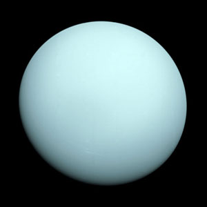

Uranus is the only giant planet whose equator is nearly at right angles to its orbit. A collision with an Earth-sized object may explain the unique tilt. Nearly a twin in size to Neptune, Uranus has more methane in its mainly hydrogen and helium atmosphere than Jupiter or Saturn. Methane gives Uranus its blue tint.Discovered: March 13, 1781 by William Herschel.